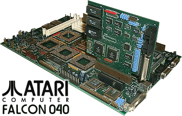

|

The Atari Falcon040 was the evolution of the
original Falcon030 design, and in many ways was probably the computer
many within the computer division would have liked to have launched
first. The Falcon030 and 040 are closely tied together , so here
is the full story...
The fact that the original Falcon030 made it
to market was testament to those within the company to push the computer
to market under strong demands to actually phase the division out much
earlier than actually planned. The fact that the Atari Jaguar was
becoming a number one priority within Atari at the time (1991/92),
instructions were filtering down from senior management that the time
was nearing when 100% of Atari's resources were needed to launch a new
games system, and the clear signal was that Atari was planning a
withdrawal from the computer market entirely.
It was a bone of contention for some senior
managers that Atari would leave the computer market, although officially
Atari made it clear to the press that this was not true, later
statements would indicate that the writing was on the wall for the
computer division. When it eventually became clear in late 1992
that Atari was exiting the computer market, Atari still painted a
picture that this was only a short "break" from the market, while the
Jaguar was being developed and launched.
For a company that had limited resources at
the time, it was important and appropriate to concentrate on their new
gaming product in such a way. Atari computers had suffered a
severe sales slump, and the rise of the PC was a major concern for the
company, so it was time to make a do or die decision and concentrate on
making money with a new revolutionary games console.
Meanwhile, the Falcon had been launched and
was available worldwide by the end of 1992. Limited advertising
and developer support had already caused the machine to falter from the
start. Although approximately 50,000 or more units were sold in
its lifetime, the Falcon030 was obviously a compromised machine.
The fact that the original machine used the
older ST case design was the first sign that resources for the machine
were marginal. Before the Falcon made its debut in Germany in
1991, many were expecting the Falcon040 at the show, after all that was
the machine Atari had been talking about before hand. It was to be
the new high-end powerhouse computer, running Unix and TOS, and would
once again provide the consumer with something Atari had done in 1985,
"Power without the price".
It seems the Falcon030 was the compromise, a
16Mhz Motorola 68030 running on a 16-bit bus. What the Atari world
really wanted was the Falcon040, a 68040 CPU running on a 32-bit bus,
expansion ports and a new system case. What we didn't know at the
time was that the Falcon040 was actually a reality, although this
reality was still in the lab, along with the expansion cards and the new
case.
We may never know the full reasons for the
demise of the Falcon040, it was obviously close to completion, but the
fact is Atari didn't have the money or resources to carry a computer
line forward and at the same time engage in a worldwide launch and support programme for
its new game system.
|